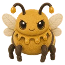
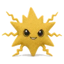
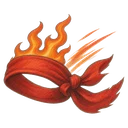
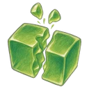
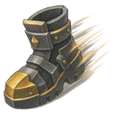
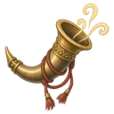
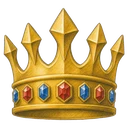
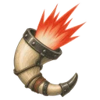

Squelette guerrier
Dès la manche 1Un squelette armé d'une épée en os. Il est lent, mais c'est le plus solide.
- PV
- 40
- Vitesse d'attaque
- 0,8/s
- Portée
- 1 case
Les ennemis arrivent en groupes par trois portes. Plus les manches avancent, plus ils sont nombreux et forts.
Un squelette armé d'une épée en os. Il est lent, mais c'est le plus solide.

Lent et tout mou. À sa chute, il se divise en 2 petits slimes.
Dès qu'elle touche sa cible, elle explose dans un rayon de 1 case, et les peluches touchées sont brûlées pendant 3 s.

Elle tire de loin une décharge électrique qui saute vers d'autres peluches dans un rayon de 2 cases, jusqu'à 3 peluches en tout. Les peluches touchées sont électrisées pendant 3 s.
Il crache du poison de loin, et les peluches touchées sont empoisonnées pendant 3 s.
Il s'arrête devant sa cible, compte 3 s, puis explose dans un rayon de 1 case. S'il est mis K.O. pendant qu'il compte, il n'explose pas.

Vitesse d'attaque +1 % pour chaque 1 % de PV perdus · jusqu'à +100 %

À sa chute, 3 exemplaires de la même peluche apparaissent · à 35% de puissance · taille réduite de 30% · le boss n'est vaincu que quand elles tombent aussi

Ne vise que le château · contourne ce qui lui barre la route · vitesse de déplacement amplifiée de 50%

Appelle à ses côtés 2 exemplaires de la même peluche toutes les 6 s · à 20% de puissance

Les autres : attaque amplifiée de 20 % · vitesse d'attaque amplifiée de 20 %
Ne peut pas tomber tant que son cœur tient debout · le cœur a 30% des PV du boss

À sa chute, les ennemis restants gagnent +80% de vitesse d'attaque